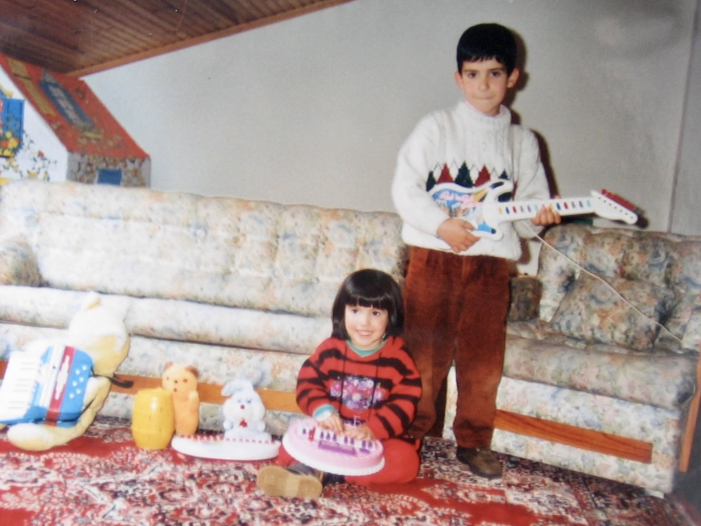
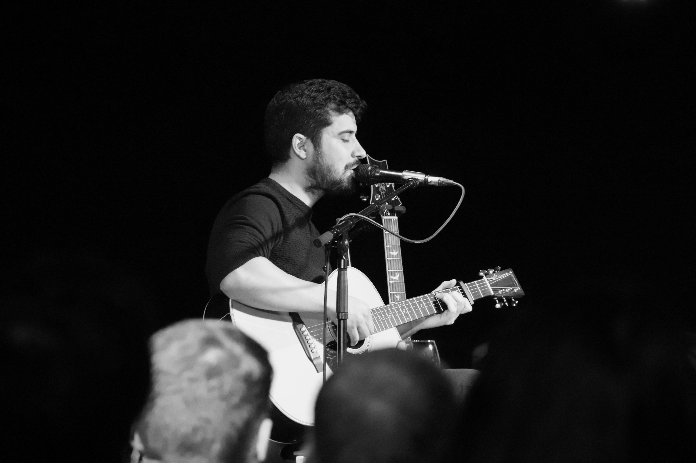
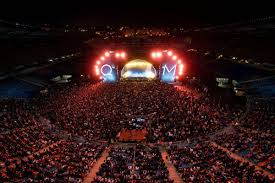

Nasceu em Coimbra, a 26 de maio de 1987, cidade onde passou a maior parte da infância e adolescência. Formou-se em Medicina em 2012 e exerce Cirurgia Torácica no IPO Coimbra.


Nasceu em Coimbra, a 26 de maio de 1987, cidade onde passou a maior parte da infância e adolescência. Formou-se em Medicina em 2012 e exerce Cirurgia Torácica no IPO Coimbra.

O primeiro contacto com a música foi na infância, quando recebeu uma guitarra clássica e de forma autodidata começou a tocar. Mais tarde, no ensino secundário, começou a cantar e a tocar com João Cristóvão.

Na faculdade integrou a Tuna de Medicina da Universidade de Coimbra, para a qual escreveu os primeiros temas originais, como “Voar” e “Canção ao Mondego”, entre outros.

Em 2013 fundou Os Quatro e Meia com cinco amigos, projeto que mantém em simultâneo com a medicina. O grupo lançou Pontos nos Is (2017), O Tempo Vai Esperar (2020) e o registo ao vivo Ao Vivo no Estádio Cidade de Coimbra (2023).

Entre as composições da sua autoria destaca-se “Amanhã”, interpretada no Festival RTP da Canção 2022.
“Na Escola” de Os Quatro e Meia é vencedora do Globo de Ouro como Melhor Música em 2023.